Coursera website: course 4 - A Complete Reinforcement Learning System (Capstone) of Reinforcement Learning Specialization
my notes on course 1 - Fundamentals of Reinforcement Learning, course 2 - Sample-based Learning Methods, course 3 - Prediction and Control with Function Approximation
specialization roadmap - course 4 - A Complete Reinforcement Learning System (Capstone) (syllabus)
Week 1 - Welcome to the Course Week 2 - Formalize Word Problem as MDP Week 3 - Choosing The Right Algorithm Week 4 - Identify Key Performance Parameters Week 5 - Implement Your Agent Week 6 - Submit Your Parameter Study!
Course 4 - Week 2 - Formalize Word Problem as MDP
Final Project: Milestone 1
Video Initial Project Meeting with Martha: Formalizing the Problem
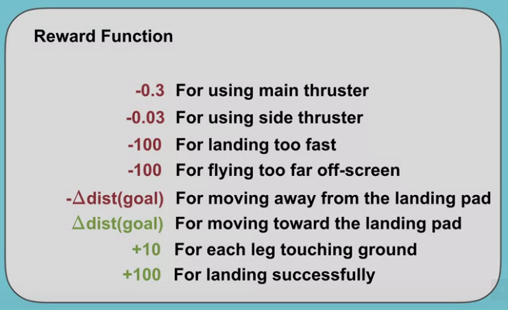
Video Andy Barto on What are Eligibility Traces and Why are they so named?
By the end of this video, you’ll understand the origin of the idea of eligibility traces and you’ll actually see that you’ve been using a variant of eligibility traces all along.
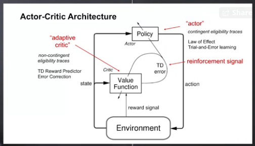
Project Resources
Video Let’s Review: Markov Decision Processes
By the end of this video, you’ll be able to understand Markov decision processes or MDPs and describe how the dynamics of MDP are defined.
Video Let’s Review: Examples of Episodic and Continuing Tasks
By the end of this video, you will be able to understand when to formalize a task as episodic or continuing.
Assignment
MoonShot Technologies
notebooks in github
Course 4 - Week 3 - Choosing The Right Algorithm
Weekly Learning Goals
Video Meeting with Niko: Choosing the Learning Algorithm
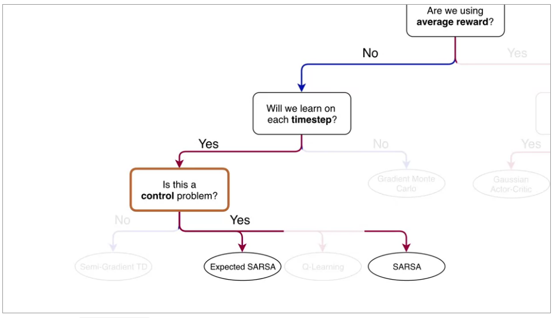
Project Resources
Video Let’s Review: Expected Sarsa

Video Let’s Review: What is Q-learning?
Video Let’s Review: Average Reward- A New Way of Formulating Control Problems
Video Let’s Review: Actor-Critic Algorithm
Video Csaba Szepesvari on Problem Landscape
Video Andy and Rich: Advice for Students
Course 4 - Week 4 - Identify Key Performance Parameters
Weekly Learning Goals
Video Agent Architecture Meeting with Martha: Overview of Design Choices
Now, let’s discuss the meta parameter choices that you will have to make to fully implement the agent. This means we need to decide on the function approximator, choices in the optimizer for updating the action values, and how to do exploration.
Project Resources
Video Let’s Review: Non-linear Approximation with Neural Networks
By the end of this video, you will understand how neural networks do feature construction, and you will understand how neural networks are a non-linear function of state.
Video Drew Bagnell on System ID + Optimal Control
Video Susan Murphy on RL in Mobile Health
Course 4 - Week 5 - Implement your agent
Weekly Learning Goals
Video Meeting with Adam: Getting the Agent Details Right
Project Resources
Video Let’s Review: Optimization Strategies for NNs
By the end of this video, you will be able to understand the importance of initialization for neural networks and describe optimization techniques for training neural networks.
One simple yet effective initialization strategy, is to randomly sample the initial weights from a normal distribution with small variance. This way, each neuron has a different output from other neurons within its layer. This provides a more diverse set of potential features. By keeping the variants small, we ensure that the output of each neuron is within the same range as its neighbors. One downside to this strategy is that, as we add more inputs to a neuron, the variance of the output grows. We can get around this issue by scaling the variance of the weights, by one over the square root of the number of inputs.
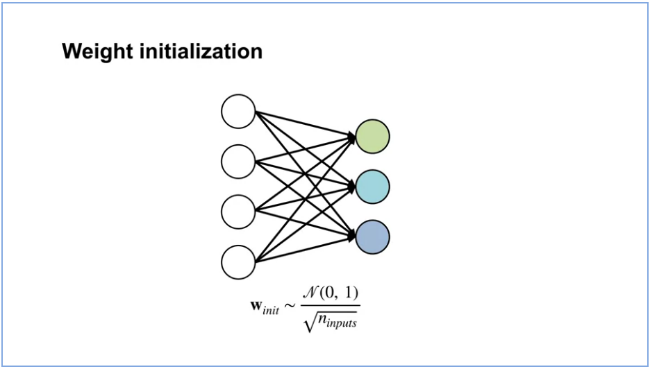
Here’s the stochastic gradient descent update rule and here’s the update modified to include momentum. Notice, it is similar to the regular stochastic gradient descent update plus an extra term called the momentum M. The momentum term summarizes the history of the gradients using a decaying sum of gradients with decay rate Lambda. If recent gradients have all been in similar directions, then we gained momentum in that direction. This means, we make a large step in that direction. If recent updates have conflicting directions, then it kills the momentum. The momentum term will have little impact on the update and we will make a regular gradient descent step. Momentum provably accelerates learning, meaning it gets to a stationary point more quickly.
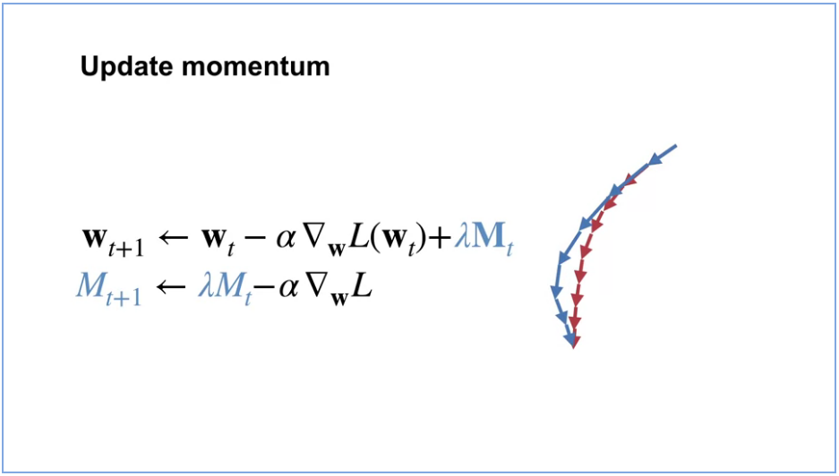
So far, we have only talked about a global scalar step size. This is well-known to be problematic because this can result in updates that are too big for some weights and too small for other weights. Adapting the step sizes for each weight, based on statistics about the learning process in practice results in much better performance. Now, how does the update change? The change is very simple. Instead of updating with a scalar Alpha, there’s a vector of step sizes indexed by t to indicate that it can change on each time-step. Each dimension of the gradient, is scaled by its corresponding step size instead of the global step size. There are a variety of methods to adapt a vector of step sizes. You’ll get to implement one in your assignment.
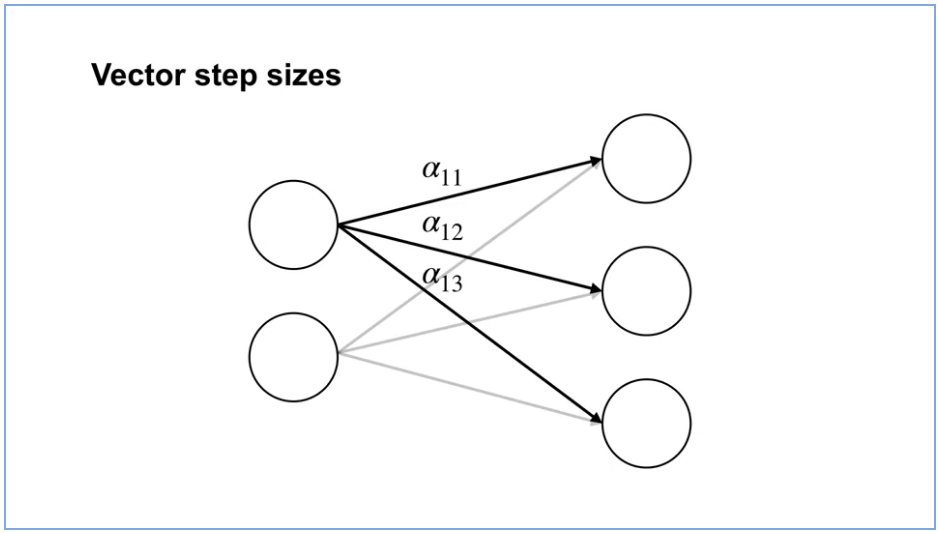
Video Let’s Review: Expected Sarsa with Function Approximation
By the end of this video, you’ll be able to explain the update for expected Sarsa with function approximation, and explain the update for Q-learning with function approximation.
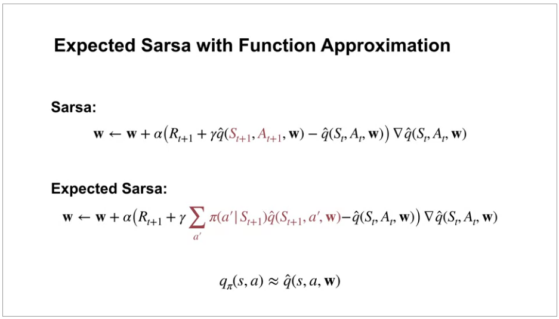
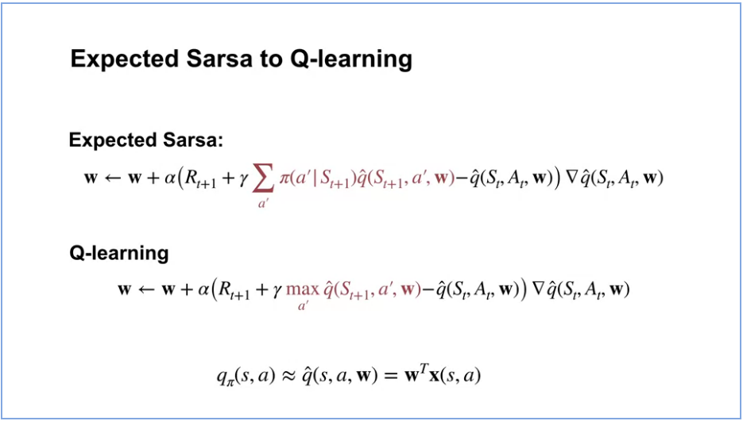
Video Let’s Review: Dyna & Q-learning in a Simple Maze
By the end of this video you will be able to describe how learning from both real and model experience impacts performance. You will also be able to explain how a model allows the agent to learn from fewer interactions with the environment.
Video Meeting with Martha: In-depth on Experience Replay
In Course 3, the agents you implemented update the value function or policy only once with each sample. But this is likely not the most sample efficient way to use our data. You have actually seen a smarter approach in Course 2 where we talked about Dyna as a way to be more sample efficient. But we only talked about Dyna for the tabular setting.
In this video, we will talk about how to make your agent more sample efficient when using function approximation. We will discuss a simple method called experience replay and how it relates to Dyna. To get some intuition for experience replay, let’s first remember a method that we know well, Dyna-Q. The idea is to learn a model using sample experience. Then simulated experience can be obtained from this model to update the values. This procedure of using simulated experience to improve the value estimates is called planning.
Experience replay is a simple method for trying to get the advantages of Dyna. The basic idea is to save a buffer of experience and let the data be the model. We sample experience from this buffer and update the value function with those samples similarly to how we sample from the model and update the values in Dyna.
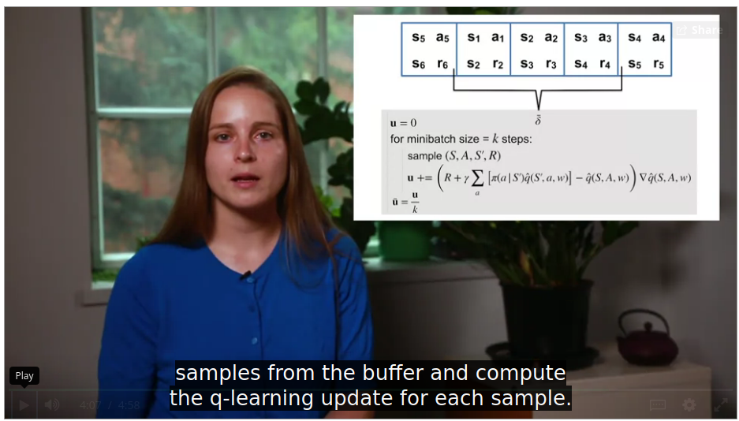
Video Martin Riedmiller on The ‘Collect and Infer’ framework for data-efficient RL
Martin Riedmiller, head of the control team at Deepmind has been working for more than 20 years on New Reinforcement Learning Agents for the control of dynamical systems.
The control of dynamical systems is an attractive application area for reinforcement learning controllers. They all share the same principle feedback control structure, a controller gets the observation, computes an action and applies it to the environment. Classical control theory would first model the process as a set of differential equations for which then a control law must be analytically derived. A tedious job in particular if the systems are complex or highly nonlinear. Reinforcement learning in contrast promises to be able to learn the controller autonomously. If only the overall control goal is specified. This is typically done by defining the immediate reward. The RL controller optimizes the expected cumulated sum of rewards over time.
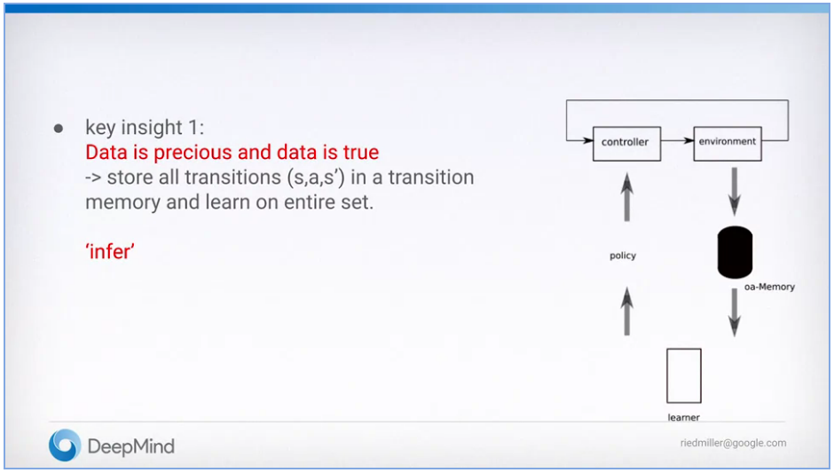
These two steps together build the so-called collecting and infer framework of reinforcement learning. This perspective keeps us focused on the two main question of data efficient RL. Infer, which means squeezing out the most of a given set of transition data. And collect, which means sampling the most formative data from the environment.
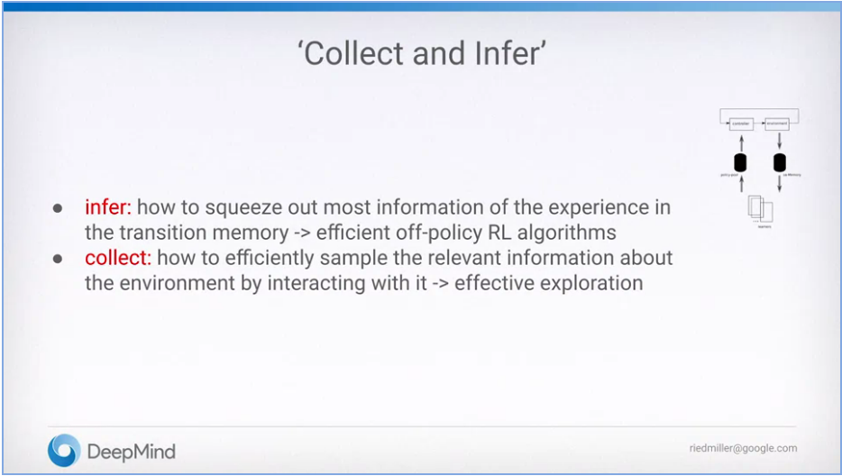
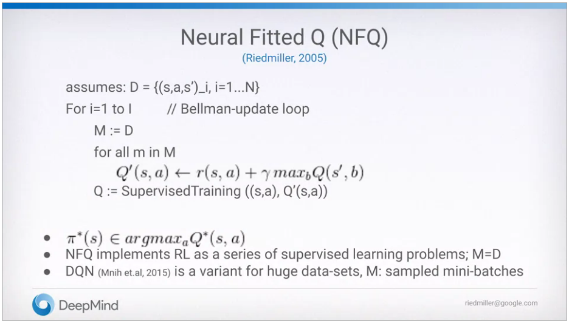
Assignment
Implement your agent
notebooks in github
Course 4 - Week 6 - Submit your Parameter Study!
Weekly Learning Goals
Video Meeting with Adam: Parameter Studies in RL
Project Resources
Video Let’s Review: Comparing TD and Monte Carlo
Video Joelle Pineau about RL that Matters
Assignment
Completing the parameter study
notebooks in github
Congratulations!
Video Meeting with Martha: Discussing Your Results
Video Course Wrap-up
Video Specialization Wrap-up